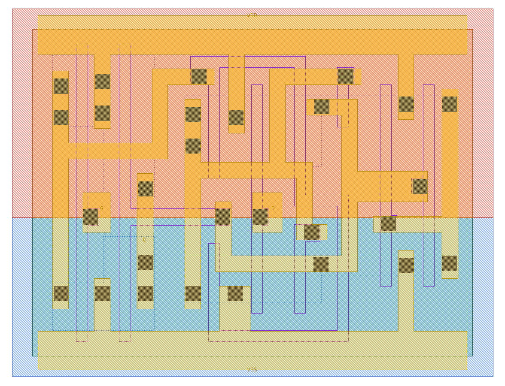
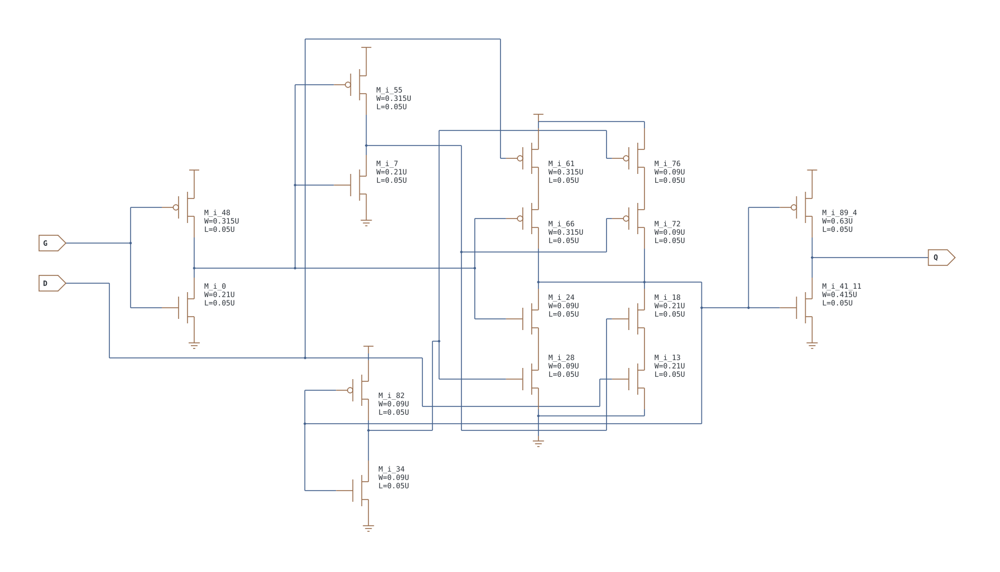

第 17 章 锁存器、反馈与透明窗口
输入不变时输出可以依赖过去：从组合逻辑进入状态电路
17.1 锁存器：真值表要带“上一状态”
本章压缩表中的 X 表示该输入可取 0 或 1、不会影响该行结论（don't care），不是在模拟输入未知时的完整行为；未知电平的 X 传播需另读库仿真模型。Q(previous) 则是已经保存的旧状态，不能擅自假定上电就是 0。
| 单元 | 透明条件 | 关闭时 | 典型应用 | 额外能力/风险 |
|---|---|---|---|---|
| DLH_X1/X2 | G=1 | G=0 保持 | 高电平透明的锁存级、两相锁存流水线 | 透明期间 D 的变化会穿到 Q，不是边沿采样 |
| DLL_X1/X2 | GN=0 | GN=1 保持 | 低电平透明的锁存级、时钟门内部使能保存 | 必须确认 GN 是低有效门控信号 |
| TLAT_X1 | G=1 时更新内部状态 | G=0 保持内部状态 | 既要保存一位又要可断开输出的接口 | OE 还会令外部 Q 高阻，需检查争用/浮空 |
DLH_X1/X2：高电平透明 D 锁存器
| G | D | Q(next) |
|---|---|---|
| 0 | X | Q(previous)，保持 |
| 1 | 0 | 0，透明 |
| 1 | 1 | 1，透明 |
DLL_X1/X2：低电平透明 D 锁存器
| GN | D | Q(next) |
|---|---|---|
| 0 | 0 | 0，透明 |
| 0 | 1 | 1，透明 |
| 1 | X | Q(previous)，保持 |
TLAT_X1：高电平透明、带三态输出的锁存器
用内部状态 q* 区分“锁存内容”和外部端口 Q：
| G | OE | q*(next) | Q |
|---|---|---|---|
| 0 | 0 | q*(previous) | Z |
| 0 | 1 | q*(previous) | q* |
| 1 | 0 | D | Z |
| 1 | 1 | D | D |
本地晶体管网表显示 OE=1 时输出级有效，OE=0 时 Q 高阻。和三态单元一样，这类行为无法由普通 *.EQN 完整表达。
透明、保持和“借时间”怎样理解
| 时刻 | DLH 的 G | D | Q | 解释 |
|---|---|---|---|---|
| t0 | 0 | 0 | Q(previous) | 锁存器关闭，D 改变也不能立刻改 Q |
| t1 | 1 | 0 | 0 | 透明窗口打开，Q 跟随 D |
| t2 | 1 | 1 | 1 | 仍在透明窗口内，D 的变化继续传播 |
| t3 | 0 | X | 1 | 窗口关闭，保存关闭前满足时序要求的值 |
锁存流水线允许一段组合逻辑在接收锁存器透明窗口内继续到达，常称“借时间”；借到的时间会减少后续阶段的余量，并不是免费增加周期。应用还包括两相非重叠时钟流水线、无毛刺时钟门中的使能保存，以及特定低功耗/接口结构。初学者写 HDL 时如果组合过程没有覆盖所有赋值分支，也可能意外推断出锁存器；这和有意识使用 DLH/DLL 是两回事。
{kind=link}

{kind=link}

17.2 一个反馈环怎样记住 0 或 1
两个反相器首尾相接，在正常供电和合适器件条件下有两个稳定逻辑状态：一个节点为 1、另一个为 0，或反过来。关闭输入通路并保持反馈时，节点偏离会通过增益和反馈被拉回原状态。它不是一个理想、永不丢电的盒子，电源关闭、噪声、竞争和模拟不稳定都可能破坏状态。
如果输入通路打开、反馈通路关闭，外部 D 可以改变内部状态；当输入关闭、反馈接回，状态被保存。这是用传输门/受控反相器理解锁存器的基本相位图。若对反馈还不熟，先重做传输门基础章的静态锁存器电路与波形实验。具体 DLH 的晶体管数和网络必须看本库 CDL，不能强制套成某个固定六管或八管模板。
17.3 把真实 DLH_X1 的 16 只管分成六组
对照上方原理图及DLH_X1 的 CDL。为方便叙述，下面给内部网取短称：GB=net_000、Gd=net_001、N=net_003、F=net_005。这些是阅读别名，不是修改网表；稳态有 GB=!G、Gd=G，转换瞬间却有真实延迟。
| 功能组 | 实际 MOS 名称 | 端子追踪结果 |
|---|---|---|
| 控制反相 | M_i_0 / M_i_48 | G 接两栅，输出 GB=!G |
| 再反相并驱动控制 | M_i_7 / M_i_55 | GB 接两栅，输出 Gd=!GB |
| 输入受控反相器 | M_i_13 / M_i_18 / M_i_61 / M_i_66 | 数据管栅接 D，串联使能管栅接 Gd/GB；G=1 时把 N 驱动为 !D |
| 反馈反相器 | M_i_34 / M_i_82 | N 接两栅，输出 F=!N |
| 反馈受控反相器 | M_i_24 / M_i_28 / M_i_72 / M_i_76 | 数据管栅接 F，使能管栅接 GB/Gd；G=0 时把 N 驱动为 !F |
| 输出反相器 | M_i_41_11 / M_i_89_4 | N 接两栅，输出 Q=!N；将外部负载与反馈输出 F 分开 |
在透明相 G=1，输入级有效、反馈受控级关闭：D=1 → N=0 → F=1、Q=1。G 降为 0 且满足时序要求后，输入级关闭、反馈级有效：F=1 → N=0，N=0 → F=1，原状态被维持；此时即使 D 改为 0，不能通过已关闭的输入级写入 N。
这份 DLH 使用受控反相器构成输入和反馈通路。它与第 8 章“TG 加反相器”的教学锁存器共享相位与存储原理，但不是把教学图的每一个 TG 直接对应到这 16 只管。读图时先找两条电源驱动链，再判断使能，才不会把相邻的一对 P/N 管都叫传输门。
练习：G=1、D=0 写入后关 G，N/F/Q 各是什么？再改 D=1 呢？
写入后 N=1、F=0、Q=0；关闭后反馈维持 N=!F=1，D 改为 1 也不改变已存状态。直到下一次合法透明窗口才重新接收输入。上述结论以正常供电和足够稳定时间为前提。
17.4 时间顺序比单独的一行真值表更重要
以下使用高电平透明的 DLH，并假定第一步已经建立 Q=0。表中 Q 是传播延迟过后的稳定值，不把门延迟画成零。
| 时刻/动作 | G | D | Q 稳定后 | 解释 |
|---|---|---|---|---|
| t0：透明，先写 0 | 1 | 0 | 0 | 输入通路允许 D 改变存储节点 |
| t1：D 改为 1 | 1 | 1 | 1 | 透明期间不必等待下一个边沿 |
| t2：G 关闭，D 保持稳定 | 0 | 1 | 1 | 保存关闭窗口前建立的状态 |
| t3：D 又改为 0 | 0 | 0 | 1 | 输入变化被隔离，反馈保持原值 |
| t4：重新透明 | 1 | 0 | 0 | 现在才更新为新的 D |
DLL 的低有效透明控制把窗口反过来：GN=0 时跟随，GN=1 时保持。不要看见信号名带 N 就自行把输出也取反；控制极性和数据极性是两个独立问题。
17.5 为什么关闭窗口附近会有建立/保持要求
输入通路不会瞬间关闭，内部反馈也不会瞬间稳定。如果 D 在关闭时刻附近变化，内部节点可能还没被推到可靠的一侧，导致输出响应很晚甚至出现亚稳态。建立时间要求 D 在相关关闭事件之前稳定足够久，保持时间要求它在之后继续稳定一段时间。具体正负数值和测量准则要由表征确定，不能用一个固定“前后各 10 ps”套所有单元。
用时间数字理解“借时间”：教学接收锁存器在 5～10 ns 透明，关闭前需留 0.2 ns 建立时间，故数据最迟 9.8 ns 到达。数据若在 6 ns 才到，虽然晚于开窗时刻 5 ns，仍可在该窗口接收；相对于开窗边界借用了约 1 ns。若到达时间变为 9.9 ns，就不能保证本次正确保存。这个例子忽略时钟偏差和其他延迟，仅用来说明可用窗口；真实 STA 要按整条锁存流水线计算，借来的时间会压缩后续阶段余量。
race-through 是另一件事：两级相连的高透明锁存器同时开窗，数据可能在同一个窗口连续穿过两级，而没有实现“每级隔开一个时序阶段”。它不是电流争用的同义词。两相时钟、非重叠时间与最小延迟要求正是为管理这些风险，不能简单把 DFF 都换成锁存器。
17.6 TLAT 的存储状态和输出使能是两件事
本库 TLAT 还带输出使能。用 Qstored 表示内部已存状态、Q 表示输出端：输出关闭时 Q 可以为 Z，而 Qstored 仍由存储环保持。打开输出不会凭空创造新的数据，应该读出已存状态；是否同时透明则由 G 决定。
| 操作意图 | 需要检查 | 常见误解 |
|---|---|---|
| 写入新值 | 透明控制及关闭前后的时序要求 | 以为输出使能 OE 可以代替写使能 |
| 暂不驱动总线 | 输出使能及其他总线驱动器 | 以为高阻就把内部存储清零 |
| 读回旧值 | 内部状态已初始化、输出已使能 | 未初始化就把仿真未知 X 解释为硬件损坏 |
- 按上面的五步，把 DLH 换成 DLL，并反转透明控制，重写 Q 序列。
- 为什么给无复位锁存器只打一段“保持”激励，未必能获得已知输出？
- TLAT 输出高阻是否代表它的反馈环停止存储？
答案
① GN 序列为 0、0、1、1、0，Q 仍为 0、1、1、1、0。② 没有先经过合法透明窗口写入确定数据，过去状态可能未知。③ 不代表；输出驱动权和内部存储分别控制，需核对具体功能表。